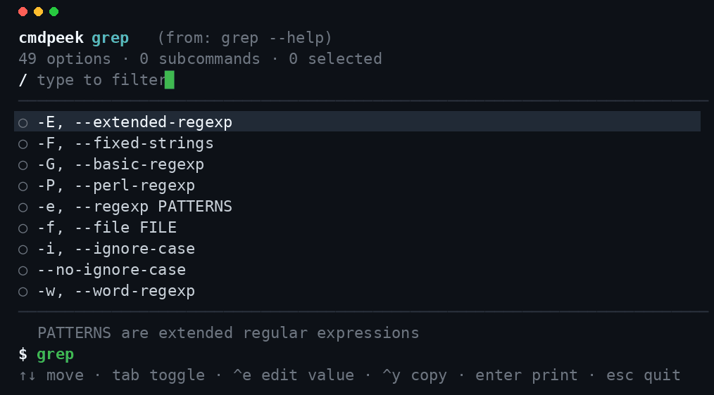

What it does
Point cmdpeek at any command. It runs that command's own --help
(falling back to its man page), parses the flags and subcommands, and drops you
into a fuzzy‑searchable picker. Toggle the flags you want, fill in their values, and cmdpeek
assembles a runnable command you can copy or print straight onto your shell prompt.
cmdpeek grep # interactive flag picker for grep cmdpeek git commit cmdpeek explain tar xzvf archive.tgz # annotate a command, token by token
Features
⌨ Shell integration — build a command with one keystroke
Add eval "$(cmdpeek --shell bash)" (or zsh/fish)
to your rc file. Type a command name, press Ctrl+G,
pick flags interactively, and the assembled command lands back on your prompt.
Like fzf's Ctrl+T, but for flags — on any CLI.
🔎 Explain mode — a local, offline explainshell
cmdpeek explain rsync -avz --delete src/ dst/ annotates every token from the tool's
own --help/man — offline, on every CLI on your PATH, including
your own scripts and internal tools that explainshell's curated database can't cover.
📖 Man‑page fallback
Classic Unix tools with a thin --help but a rich man page (find,
xargs, ssh, tar, rsync, sort)
are parsed correctly — cmdpeek reads the man page's OPTIONS section automatically.
🪶 Zero dependencies, always current
A raw‑mode ANSI TUI with no Ink/React and no runtime dependencies. Because it parses the installed binary, there's no cheatsheet to fall out of date — the flags shown are the flags you actually have.
How it compares
| Tool | Source of truth | Interactive builder | Explains a command | Works offline / on private CLIs |
|---|---|---|---|---|
| cmdpeek | the tool's own --help/man | ✅ yes | ✅ yes | ✅ yes |
| tldr / cheat.sh / navi | human‑curated snippets | navi only, curated | — | partial |
| explainshell | server‑side man DB | — | ✅ (web) | ❌ online, curated only |
| fzf shell widgets | — | files/history, not flags | — | ✅ |
Install
Requires Node.js 18+.
Run instantly (no install)
npx cmdpeek grep
npm (global)
npm install -g cmdpeek cmdpeek tar
Homebrew (macOS/Linux)
brew install esperanza-volkov/confdiff/cmdpeek
Enable the Ctrl‑G shell widget
# bash — add to ~/.bashrc eval "$(cmdpeek --shell bash)" # zsh — add to ~/.zshrc eval "$(cmdpeek --shell zsh)" # fish — add to ~/.config/fish/config.fish cmdpeek --shell fish | source